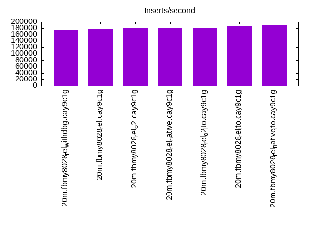
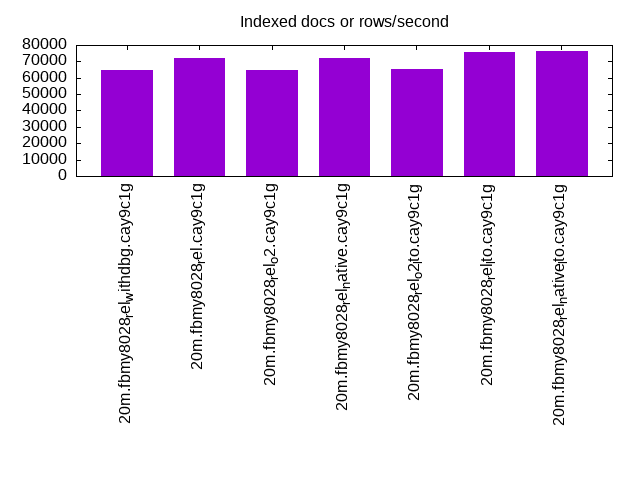
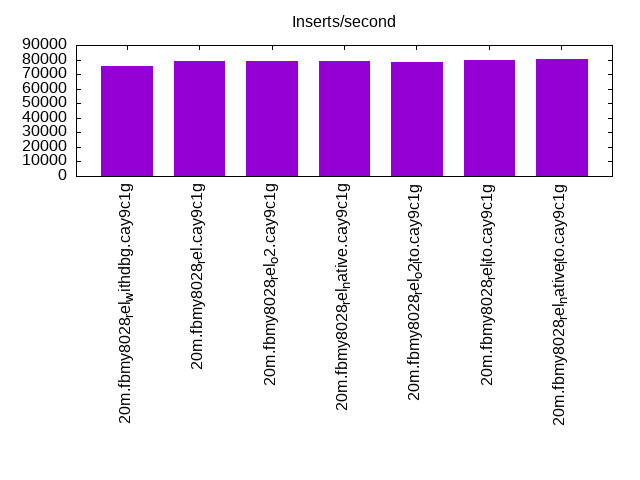
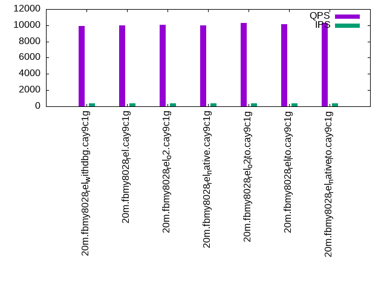
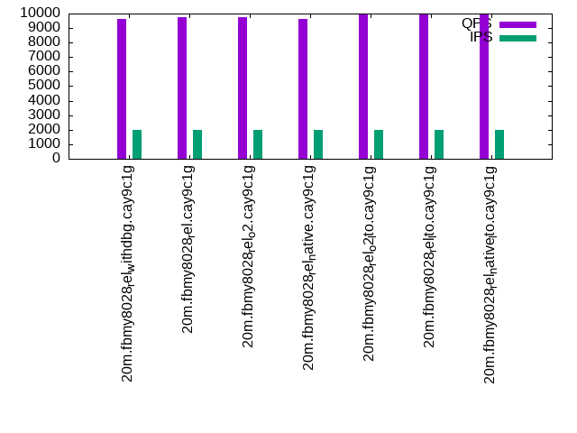
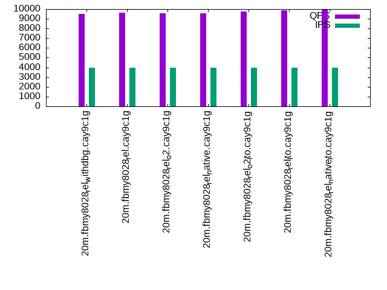

This is a report for the insert benchmark with 20M docs and 4 client(s). It is generated by scripts (bash, awk, sed) and Tufte might not be impressed. An overview of the insert benchmark is here and a short update is here. Below, by DBMS, I mean DBMS+version.config. An example is my8020.c10b40 where my means MySQL, 8020 is version 8.0.20 and c10b40 is the name for the configuration file.
The test server has 8 AMD cores, 16G RAM and an NVMe SSD. It is described here as the Beelink. The benchmark was run with 4 clients and there were 1 or 2 connections per client (1 for queries, 1 for inserts). The benchmark loads 20M rows without secondary indexes, creates secondary indexes, loads another 20M rows then does 3 read+write tests for one hour each that do queries as fast as possible with 100, 500 and then 1000 writes/second/client concurrent with the queries. All clients share one table. The database is cached by the OS page cache but not by the storage engine. Clients and the DBMS share one server. The per-database configs are in the per-database subdirectories here.
The tested DBMS are:
The numbers are inserts/s for l.i0 and l.i1, indexed docs (or rows) /s for l.x and queries/s for q*.2. The values are the average rate over the entire test for inserts (IPS) and queries (QPS). The range of values for IPS and QPS is split into 3 parts: bottom 25%, middle 50%, top 25%. Values in the bottom 25% have a red background, values in the top 25% have a green background and values in the middle have no color. A gray background is used for values that can be ignored because the DBMS did not sustain the target insert rate. Red backgrounds are not used when the minimum value is within 80% of the max value.
| dbms | l.i0 | l.x | l.i1 | q100.1 | q500.1 | q1000.1 |
|---|---|---|---|---|---|---|
| 20m.fbmy8028_rel_withdbg.cay9c1g | 175438 | 64839 | 75472 | 9940 | 9626 | 9526 |
| 20m.fbmy8028_rel.cay9c1g | 178571 | 72043 | 78740 | 9973 | 9764 | 9623 |
| 20m.fbmy8028_rel_o2.cay9c1g | 180180 | 64839 | 79051 | 10043 | 9771 | 9544 |
| 20m.fbmy8028_rel_native.cay9c1g | 181818 | 71786 | 78740 | 9978 | 9631 | 9544 |
| 20m.fbmy8028_rel_o2_lto.cay9c1g | 181818 | 65472 | 78431 | 10321 | 9978 | 9740 |
| 20m.fbmy8028_rel_lto.cay9c1g | 186916 | 75849 | 79681 | 10104 | 9970 | 9906 |
| 20m.fbmy8028_rel_native_lto.cay9c1g | 188679 | 76136 | 80321 | 10251 | 9972 | 9915 |
This table has relative throughput, throughput for the DBMS relative to the DBMS in the first line, using the absolute throughput from the previous table.
| dbms | l.i0 | l.x | l.i1 | q100.1 | q500.1 | q1000.1 |
|---|---|---|---|---|---|---|
| 20m.fbmy8028_rel_withdbg.cay9c1g | 1.00 | 1.00 | 1.00 | 1.00 | 1.00 | 1.00 |
| 20m.fbmy8028_rel.cay9c1g | 1.02 | 1.11 | 1.04 | 1.00 | 1.01 | 1.01 |
| 20m.fbmy8028_rel_o2.cay9c1g | 1.03 | 1.00 | 1.05 | 1.01 | 1.02 | 1.00 |
| 20m.fbmy8028_rel_native.cay9c1g | 1.04 | 1.11 | 1.04 | 1.00 | 1.00 | 1.00 |
| 20m.fbmy8028_rel_o2_lto.cay9c1g | 1.04 | 1.01 | 1.04 | 1.04 | 1.04 | 1.02 |
| 20m.fbmy8028_rel_lto.cay9c1g | 1.07 | 1.17 | 1.06 | 1.02 | 1.04 | 1.04 |
| 20m.fbmy8028_rel_native_lto.cay9c1g | 1.08 | 1.17 | 1.06 | 1.03 | 1.04 | 1.04 |
This lists the average rate of inserts/s for the tests that do inserts concurrent with queries. For such tests the query rate is listed in the table above. The read+write tests are setup so that the insert rate should match the target rate every second. Cells that are not at least 95% of the target have a red background to indicate a failure to satisfy the target.
| dbms | q100.1 | q500.1 | q1000.1 |
|---|---|---|---|
| fbmy8028_rel_withdbg.cay9c1g | 399 | 1994 | 3989 |
| fbmy8028_rel.cay9c1g | 399 | 1993 | 3989 |
| fbmy8028_rel_o2.cay9c1g | 399 | 1994 | 3987 |
| fbmy8028_rel_native.cay9c1g | 399 | 1993 | 3989 |
| fbmy8028_rel_o2_lto.cay9c1g | 399 | 1994 | 3989 |
| fbmy8028_rel_lto.cay9c1g | 399 | 1994 | 3989 |
| fbmy8028_rel_native_lto.cay9c1g | 399 | 1994 | 3987 |
| target | 400 | 2000 | 4000 |
l.i0: load without secondary indexes. Graphs for performance per 1-second interval are here.
Average throughput:
Insert response time histogram: each cell has the percentage of responses that take <= the time in the header and max is the max response time in seconds. For the max column values in the top 25% of the range have a red background and in the bottom 25% of the range have a green background. The red background is not used when the min value is within 80% of the max value.
| dbms | 256us | 1ms | 4ms | 16ms | 64ms | 256ms | 1s | 4s | 16s | gt | max |
|---|---|---|---|---|---|---|---|---|---|---|---|
| fbmy8028_rel_withdbg.cay9c1g | 99.354 | 0.402 | 0.230 | 0.013 | 0.125 | ||||||
| fbmy8028_rel.cay9c1g | 99.380 | 0.383 | 0.224 | 0.013 | 0.125 | ||||||
| fbmy8028_rel_o2.cay9c1g | 99.349 | 0.421 | 0.216 | 0.013 | 0.126 | ||||||
| fbmy8028_rel_native.cay9c1g | 99.359 | 0.439 | 0.189 | 0.013 | 0.115 | ||||||
| fbmy8028_rel_o2_lto.cay9c1g | 99.359 | 0.411 | 0.216 | 0.013 | 0.125 | ||||||
| fbmy8028_rel_lto.cay9c1g | 99.364 | 0.394 | 0.228 | 0.013 | 0.114 | ||||||
| fbmy8028_rel_native_lto.cay9c1g | 99.384 | 0.370 | 0.232 | 0.013 | 0.114 |
Performance metrics for the DBMS listed above. Some are normalized by throughput, others are not. Legend for results is here.
ips qps rps rmbps wps wmbps rpq rkbpq wpi wkbpi csps cpups cspq cpupq dbgb1 dbgb2 rss maxop p50 p99 tag 175438 0 0 0.0 102.1 37.6 0.000 0.000 0.001 0.219 17550 67.6 0.100 31 0.7 1.9 0.7 0.125 50346 6895 20m.fbmy8028_rel_withdbg.cay9c1g 178571 0 0 0.0 99.4 36.5 0.000 0.000 0.001 0.209 17669 67.4 0.099 30 0.7 1.9 0.7 0.125 50662 11887 20m.fbmy8028_rel.cay9c1g 180180 0 0 0.0 103.5 38.1 0.000 0.000 0.001 0.217 17677 67.8 0.098 30 0.7 1.9 0.7 0.126 51044 20478 20m.fbmy8028_rel_o2.cay9c1g 181818 0 0 0.0 103.0 38.2 0.000 0.000 0.001 0.215 17829 67.5 0.098 30 0.7 1.9 0.7 0.115 51543 39469 20m.fbmy8028_rel_native.cay9c1g 181818 0 0 0.0 103.5 38.0 0.000 0.000 0.001 0.214 17631 67.5 0.097 30 0.7 1.9 0.7 0.125 51444 8990 20m.fbmy8028_rel_o2_lto.cay9c1g 186916 0 0 0.0 105.8 39.1 0.000 0.000 0.001 0.214 18226 68.2 0.098 29 0.7 1.9 0.7 0.114 52941 42568 20m.fbmy8028_rel_lto.cay9c1g 188679 0 0 0.0 103.7 38.1 0.000 0.000 0.001 0.207 18379 68.2 0.097 29 0.7 2.0 0.7 0.114 53548 400 20m.fbmy8028_rel_native_lto.cay9c1g
l.x: create secondary indexes.
Average throughput:
Performance metrics for the DBMS listed above. Some are normalized by throughput, others are not. Legend for results is here.
ips qps rps rmbps wps wmbps rpq rkbpq wpi wkbpi csps cpups cspq cpupq dbgb1 dbgb2 rss maxop p50 p99 tag 64839 0 0 0.0 25.7 9.8 0.000 0.000 0.000 0.155 365 12.7 0.006 16 1.4 2.7 1.9 0.011 NA NA 20m.fbmy8028_rel_withdbg.cay9c1g 72043 0 0 0.0 28.1 10.9 0.000 0.000 0.000 0.155 381 12.8 0.005 14 1.4 2.6 1.9 0.007 NA NA 20m.fbmy8028_rel.cay9c1g 64839 0 0 0.0 25.6 9.8 0.000 0.000 0.000 0.155 342 12.8 0.005 16 1.4 2.6 1.9 0.007 NA NA 20m.fbmy8028_rel_o2.cay9c1g 71786 0 0 0.0 27.9 10.8 0.000 0.000 0.000 0.155 364 12.7 0.005 14 1.4 2.7 1.9 0.008 NA NA 20m.fbmy8028_rel_native.cay9c1g 65472 0 0 0.0 25.8 9.9 0.000 0.000 0.000 0.156 359 12.7 0.005 16 1.4 2.6 1.9 0.008 NA NA 20m.fbmy8028_rel_o2_lto.cay9c1g 75849 0 0 0.0 29.8 11.5 0.000 0.000 0.000 0.156 407 12.7 0.005 13 1.4 2.7 1.9 0.009 NA NA 20m.fbmy8028_rel_lto.cay9c1g 76136 0 0 0.0 29.6 11.5 0.000 0.000 0.000 0.155 373 12.7 0.005 13 1.4 2.6 1.9 0.008 NA NA 20m.fbmy8028_rel_native_lto.cay9c1g
l.i1: continue load after secondary indexes created. Graphs for performance per 1-second interval are here.
Average throughput:
Insert response time histogram: each cell has the percentage of responses that take <= the time in the header and max is the max response time in seconds. For the max column values in the top 25% of the range have a red background and in the bottom 25% of the range have a green background. The red background is not used when the min value is within 80% of the max value.
| dbms | 256us | 1ms | 4ms | 16ms | 64ms | 256ms | 1s | 4s | 16s | gt | max |
|---|---|---|---|---|---|---|---|---|---|---|---|
| fbmy8028_rel_withdbg.cay9c1g | 98.932 | 0.933 | 0.133 | 0.002 | 0.120 | ||||||
| fbmy8028_rel.cay9c1g | 99.127 | 0.739 | 0.130 | 0.004 | 0.121 | ||||||
| fbmy8028_rel_o2.cay9c1g | 99.035 | 0.839 | 0.120 | 0.006 | 0.130 | ||||||
| fbmy8028_rel_native.cay9c1g | 99.041 | 0.836 | 0.118 | 0.005 | 0.131 | ||||||
| fbmy8028_rel_o2_lto.cay9c1g | 99.074 | 0.795 | 0.125 | 0.006 | 0.152 | ||||||
| fbmy8028_rel_lto.cay9c1g | 99.130 | 0.748 | 0.116 | 0.006 | 0.117 | ||||||
| fbmy8028_rel_native_lto.cay9c1g | 99.120 | 0.757 | 0.117 | 0.006 | 0.133 |
Performance metrics for the DBMS listed above. Some are normalized by throughput, others are not. Legend for results is here.
ips qps rps rmbps wps wmbps rpq rkbpq wpi wkbpi csps cpups cspq cpupq dbgb1 dbgb2 rss maxop p50 p99 tag 75472 0 3 0.4 149.4 57.9 0.000 0.005 0.002 0.785 17092 71.9 0.226 76 3.9 5.8 1.7 0.120 19129 16133 20m.fbmy8028_rel_withdbg.cay9c1g 78740 0 0 0.0 154.7 59.8 0.000 0.000 0.002 0.778 17728 71.8 0.225 73 4.7 6.6 1.8 0.121 20128 16482 20m.fbmy8028_rel.cay9c1g 79051 0 6 0.8 150.0 58.7 0.000 0.010 0.002 0.760 17756 72.0 0.225 73 4.4 6.3 1.7 0.130 20228 16685 20m.fbmy8028_rel_o2.cay9c1g 78740 0 9 1.2 149.0 58.1 0.000 0.015 0.002 0.756 17626 71.3 0.224 72 4.0 5.9 1.7 0.131 20136 16468 20m.fbmy8028_rel_native.cay9c1g 78431 0 0 0.0 151.1 58.9 0.000 0.000 0.002 0.768 17623 72.2 0.225 74 5.3 7.2 1.8 0.152 20028 16232 20m.fbmy8028_rel_o2_lto.cay9c1g 79681 0 12 1.6 153.9 60.2 0.000 0.020 0.002 0.774 17849 71.3 0.224 72 3.5 5.4 1.8 0.117 20278 16432 20m.fbmy8028_rel_lto.cay9c1g 80321 0 6 0.8 155.7 60.5 0.000 0.010 0.002 0.772 18091 71.2 0.225 71 3.8 5.7 1.7 0.133 20436 15983 20m.fbmy8028_rel_native_lto.cay9c1g
q100.1: range queries with 100 insert/s per client. Graphs for performance per 1-second interval are here.
Average throughput:
Query response time histogram: each cell has the percentage of responses that take <= the time in the header and max is the max response time in seconds. For max values in the top 25% of the range have a red background and in the bottom 25% of the range have a green background. The red background is not used when the min value is within 80% of the max value.
| dbms | 256us | 1ms | 4ms | 16ms | 64ms | 256ms | 1s | 4s | 16s | gt | max |
|---|---|---|---|---|---|---|---|---|---|---|---|
| fbmy8028_rel_withdbg.cay9c1g | 1.917 | 98.066 | 0.017 | 0.001 | 0.010 | ||||||
| fbmy8028_rel.cay9c1g | 3.169 | 96.816 | 0.014 | 0.001 | 0.009 | ||||||
| fbmy8028_rel_o2.cay9c1g | 3.026 | 96.959 | 0.013 | 0.001 | 0.013 | ||||||
| fbmy8028_rel_native.cay9c1g | 2.697 | 97.286 | 0.016 | 0.001 | 0.009 | ||||||
| fbmy8028_rel_o2_lto.cay9c1g | 6.654 | 93.332 | 0.013 | 0.001 | nonzero | 0.157 | |||||
| fbmy8028_rel_lto.cay9c1g | 4.915 | 95.071 | 0.014 | 0.001 | nonzero | 0.017 | |||||
| fbmy8028_rel_native_lto.cay9c1g | 6.958 | 93.028 | 0.013 | 0.001 | nonzero | 0.019 |
Insert response time histogram: each cell has the percentage of responses that take <= the time in the header and max is the max response time in seconds. For max values in the top 25% of the range have a red background and in the bottom 25% of the range have a green background. The red background is not used when the min value is within 80% of the max value.
| dbms | 256us | 1ms | 4ms | 16ms | 64ms | 256ms | 1s | 4s | 16s | gt | max |
|---|---|---|---|---|---|---|---|---|---|---|---|
| fbmy8028_rel_withdbg.cay9c1g | 99.208 | 0.729 | 0.062 | 0.019 | |||||||
| fbmy8028_rel.cay9c1g | 99.333 | 0.639 | 0.028 | 0.017 | |||||||
| fbmy8028_rel_o2.cay9c1g | 99.535 | 0.424 | 0.042 | 0.017 | |||||||
| fbmy8028_rel_native.cay9c1g | 99.458 | 0.500 | 0.042 | 0.017 | |||||||
| fbmy8028_rel_o2_lto.cay9c1g | 99.493 | 0.465 | 0.042 | 0.017 | |||||||
| fbmy8028_rel_lto.cay9c1g | 99.750 | 0.215 | 0.035 | 0.023 | |||||||
| fbmy8028_rel_native_lto.cay9c1g | 99.097 | 0.854 | 0.049 | 0.021 |
Performance metrics for the DBMS listed above. Some are normalized by throughput, others are not. Legend for results is here.
ips qps rps rmbps wps wmbps rpq rkbpq wpi wkbpi csps cpups cspq cpupq dbgb1 dbgb2 rss maxop p50 p99 tag 399 9940 34 0.4 7.7 1.9 0.003 0.036 0.019 4.803 37773 51.3 3.800 413 2.8 4.8 1.9 0.010 2509 1870 20m.fbmy8028_rel_withdbg.cay9c1g 399 9973 43 0.4 7.6 1.8 0.004 0.042 0.019 4.749 37828 51.2 3.793 411 2.8 4.8 1.8 0.009 2525 1950 20m.fbmy8028_rel.cay9c1g 399 10043 25 0.3 7.6 1.8 0.002 0.030 0.019 4.601 38090 51.2 3.793 408 2.8 4.8 1.8 0.013 2558 1999 20m.fbmy8028_rel_o2.cay9c1g 399 9978 16 0.2 7.3 1.7 0.002 0.025 0.018 4.313 37935 51.1 3.802 410 2.8 4.8 1.8 0.009 2525 1982 20m.fbmy8028_rel_native.cay9c1g 399 10321 43 0.4 8.0 2.0 0.004 0.040 0.020 5.193 39048 51.3 3.783 398 2.8 4.8 1.9 0.157 2557 2046 20m.fbmy8028_rel_o2_lto.cay9c1g 399 10104 8 0.2 6.6 1.4 0.001 0.019 0.017 3.639 38318 51.0 3.792 404 2.9 4.9 1.8 0.017 2525 2062 20m.fbmy8028_rel_lto.cay9c1g 399 10251 25 0.3 7.3 1.7 0.002 0.030 0.018 4.346 38914 51.2 3.796 400 2.8 4.9 1.8 0.019 2589 2030 20m.fbmy8028_rel_native_lto.cay9c1g
q500.1: range queries with 500 insert/s per client. Graphs for performance per 1-second interval are here.
Average throughput:
Query response time histogram: each cell has the percentage of responses that take <= the time in the header and max is the max response time in seconds. For max values in the top 25% of the range have a red background and in the bottom 25% of the range have a green background. The red background is not used when the min value is within 80% of the max value.
| dbms | 256us | 1ms | 4ms | 16ms | 64ms | 256ms | 1s | 4s | 16s | gt | max |
|---|---|---|---|---|---|---|---|---|---|---|---|
| fbmy8028_rel_withdbg.cay9c1g | 0.588 | 99.324 | 0.083 | 0.005 | nonzero | 0.018 | |||||
| fbmy8028_rel.cay9c1g | 1.057 | 98.862 | 0.077 | 0.004 | nonzero | 0.019 | |||||
| fbmy8028_rel_o2.cay9c1g | 0.704 | 99.224 | 0.068 | 0.003 | nonzero | 0.017 | |||||
| fbmy8028_rel_native.cay9c1g | 0.583 | 99.335 | 0.078 | 0.004 | nonzero | 0.016 | |||||
| fbmy8028_rel_o2_lto.cay9c1g | 2.199 | 97.722 | 0.075 | 0.004 | nonzero | 0.018 | |||||
| fbmy8028_rel_lto.cay9c1g | 2.889 | 97.027 | 0.079 | 0.005 | nonzero | 0.036 | |||||
| fbmy8028_rel_native_lto.cay9c1g | 3.574 | 96.350 | 0.071 | 0.005 | nonzero | 0.019 |
Insert response time histogram: each cell has the percentage of responses that take <= the time in the header and max is the max response time in seconds. For max values in the top 25% of the range have a red background and in the bottom 25% of the range have a green background. The red background is not used when the min value is within 80% of the max value.
| dbms | 256us | 1ms | 4ms | 16ms | 64ms | 256ms | 1s | 4s | 16s | gt | max |
|---|---|---|---|---|---|---|---|---|---|---|---|
| fbmy8028_rel_withdbg.cay9c1g | 95.029 | 4.872 | 0.097 | 0.001 | 0.068 | ||||||
| fbmy8028_rel.cay9c1g | 96.150 | 3.760 | 0.090 | 0.064 | |||||||
| fbmy8028_rel_o2.cay9c1g | 98.860 | 1.083 | 0.057 | 0.062 | |||||||
| fbmy8028_rel_native.cay9c1g | 95.571 | 4.333 | 0.096 | 0.063 | |||||||
| fbmy8028_rel_o2_lto.cay9c1g | 94.819 | 5.081 | 0.100 | 0.062 | |||||||
| fbmy8028_rel_lto.cay9c1g | 95.251 | 4.653 | 0.096 | 0.063 | |||||||
| fbmy8028_rel_native_lto.cay9c1g | 94.074 | 5.794 | 0.132 | 0.062 |
Performance metrics for the DBMS listed above. Some are normalized by throughput, others are not. Legend for results is here.
ips qps rps rmbps wps wmbps rpq rkbpq wpi wkbpi csps cpups cspq cpupq dbgb1 dbgb2 rss maxop p50 p99 tag 1994 9626 0 0.0 7.6 1.8 0.000 0.000 0.004 0.948 36467 51.7 3.788 430 3.2 3.6 1.9 0.018 2382 1950 20m.fbmy8028_rel_withdbg.cay9c1g 1993 9764 0 0.0 6.9 1.6 0.000 0.000 0.003 0.802 37055 51.4 3.795 421 3.2 3.6 1.8 0.019 2477 1998 20m.fbmy8028_rel.cay9c1g 1994 9771 0 0.0 7.2 1.6 0.000 0.000 0.004 0.846 37112 51.4 3.798 421 3.2 3.6 1.8 0.017 2413 1966 20m.fbmy8028_rel_o2.cay9c1g 1993 9631 0 0.0 6.8 1.5 0.000 0.000 0.003 0.776 36592 51.4 3.799 427 3.2 3.7 1.8 0.016 2461 1966 20m.fbmy8028_rel_native.cay9c1g 1994 9978 0 0.0 7.1 1.6 0.000 0.000 0.004 0.832 37797 51.4 3.788 412 3.2 3.6 1.8 0.018 2509 2046 20m.fbmy8028_rel_o2_lto.cay9c1g 1994 9970 0 0.0 7.8 2.0 0.000 0.000 0.004 1.026 37762 51.6 3.788 414 3.1 3.6 1.7 0.036 2525 2062 20m.fbmy8028_rel_lto.cay9c1g 1994 9972 0 0.0 7.3 1.7 0.000 0.000 0.004 0.870 37741 51.5 3.785 413 3.2 3.6 1.8 0.019 2557 2094 20m.fbmy8028_rel_native_lto.cay9c1g
q1000.1: range queries with 1000 insert/s per client. Graphs for performance per 1-second interval are here.
Average throughput:
Query response time histogram: each cell has the percentage of responses that take <= the time in the header and max is the max response time in seconds. For max values in the top 25% of the range have a red background and in the bottom 25% of the range have a green background. The red background is not used when the min value is within 80% of the max value.
| dbms | 256us | 1ms | 4ms | 16ms | 64ms | 256ms | 1s | 4s | 16s | gt | max |
|---|---|---|---|---|---|---|---|---|---|---|---|
| fbmy8028_rel_withdbg.cay9c1g | 0.386 | 99.389 | 0.217 | 0.008 | nonzero | 0.020 | |||||
| fbmy8028_rel.cay9c1g | 0.626 | 99.151 | 0.215 | 0.008 | nonzero | 0.019 | |||||
| fbmy8028_rel_o2.cay9c1g | 0.451 | 99.316 | 0.225 | 0.009 | nonzero | 0.024 | |||||
| fbmy8028_rel_native.cay9c1g | 0.507 | 99.266 | 0.219 | 0.008 | nonzero | 0.026 | |||||
| fbmy8028_rel_o2_lto.cay9c1g | 1.008 | 98.763 | 0.219 | 0.009 | nonzero | 0.022 | |||||
| fbmy8028_rel_lto.cay9c1g | 1.885 | 97.913 | 0.195 | 0.007 | nonzero | 0.024 | |||||
| fbmy8028_rel_native_lto.cay9c1g | 2.372 | 97.424 | 0.197 | 0.008 | nonzero | 0.037 |
Insert response time histogram: each cell has the percentage of responses that take <= the time in the header and max is the max response time in seconds. For max values in the top 25% of the range have a red background and in the bottom 25% of the range have a green background. The red background is not used when the min value is within 80% of the max value.
| dbms | 256us | 1ms | 4ms | 16ms | 64ms | 256ms | 1s | 4s | 16s | gt | max |
|---|---|---|---|---|---|---|---|---|---|---|---|
| fbmy8028_rel_withdbg.cay9c1g | 91.243 | 8.634 | 0.122 | 0.001 | 0.066 | ||||||
| fbmy8028_rel.cay9c1g | 87.828 | 11.999 | 0.172 | 0.001 | 0.068 | ||||||
| fbmy8028_rel_o2.cay9c1g | 87.003 | 12.822 | 0.175 | 0.060 | |||||||
| fbmy8028_rel_native.cay9c1g | 90.968 | 8.899 | 0.132 | 0.001 | 0.068 | ||||||
| fbmy8028_rel_o2_lto.cay9c1g | 84.478 | 15.341 | 0.180 | 0.001 | 0.071 | ||||||
| fbmy8028_rel_lto.cay9c1g | 90.315 | 9.529 | 0.155 | 0.001 | 0.068 | ||||||
| fbmy8028_rel_native_lto.cay9c1g | 90.328 | 9.533 | 0.139 | 0.061 |
Performance metrics for the DBMS listed above. Some are normalized by throughput, others are not. Legend for results is here.
ips qps rps rmbps wps wmbps rpq rkbpq wpi wkbpi csps cpups cspq cpupq dbgb1 dbgb2 rss maxop p50 p99 tag 3989 9526 0 0.0 14.3 4.5 0.000 0.000 0.004 1.150 35769 53.7 3.755 451 3.7 5.1 1.9 0.020 2398 1999 20m.fbmy8028_rel_withdbg.cay9c1g 3989 9623 0 0.0 14.8 4.8 0.000 0.000 0.004 1.229 36130 53.6 3.755 446 3.7 5.1 1.8 0.019 2414 1999 20m.fbmy8028_rel.cay9c1g 3987 9544 0 0.0 14.8 4.7 0.000 0.000 0.004 1.213 35826 53.7 3.754 450 3.7 5.1 1.9 0.024 2413 1966 20m.fbmy8028_rel_o2.cay9c1g 3989 9544 0 0.0 15.2 4.8 0.000 0.000 0.004 1.244 35849 53.8 3.756 451 3.7 5.1 1.8 0.026 2413 1998 20m.fbmy8028_rel_native.cay9c1g 3989 9740 0 0.0 15.4 5.0 0.000 0.000 0.004 1.285 36448 54.0 3.742 444 3.6 5.0 1.8 0.022 2445 2014 20m.fbmy8028_rel_o2_lto.cay9c1g 3989 9906 0 0.0 13.8 4.3 0.000 0.000 0.003 1.111 37179 53.4 3.753 431 3.7 5.1 1.8 0.024 2509 2030 20m.fbmy8028_rel_lto.cay9c1g 3987 9915 0 0.0 14.7 4.8 0.000 0.000 0.004 1.234 37126 53.8 3.745 434 3.9 5.3 1.8 0.037 2493 2014 20m.fbmy8028_rel_native_lto.cay9c1g
l.i0: load without secondary indexes
Performance metrics for all DBMS, not just the ones listed above. Some are normalized by throughput, others are not. Legend for results is here.
ips qps rps rmbps wps wmbps rpq rkbpq wpi wkbpi csps cpups cspq cpupq dbgb1 dbgb2 rss maxop p50 p99 tag 175438 0 0 0.0 102.1 37.6 0.000 0.000 0.001 0.219 17550 67.6 0.100 31 0.7 1.9 0.7 0.125 50346 6895 20m.fbmy8028_rel_withdbg.cay9c1g 178571 0 0 0.0 99.4 36.5 0.000 0.000 0.001 0.209 17669 67.4 0.099 30 0.7 1.9 0.7 0.125 50662 11887 20m.fbmy8028_rel.cay9c1g 180180 0 0 0.0 103.5 38.1 0.000 0.000 0.001 0.217 17677 67.8 0.098 30 0.7 1.9 0.7 0.126 51044 20478 20m.fbmy8028_rel_o2.cay9c1g 181818 0 0 0.0 103.0 38.2 0.000 0.000 0.001 0.215 17829 67.5 0.098 30 0.7 1.9 0.7 0.115 51543 39469 20m.fbmy8028_rel_native.cay9c1g 181818 0 0 0.0 103.5 38.0 0.000 0.000 0.001 0.214 17631 67.5 0.097 30 0.7 1.9 0.7 0.125 51444 8990 20m.fbmy8028_rel_o2_lto.cay9c1g 186916 0 0 0.0 105.8 39.1 0.000 0.000 0.001 0.214 18226 68.2 0.098 29 0.7 1.9 0.7 0.114 52941 42568 20m.fbmy8028_rel_lto.cay9c1g 188679 0 0 0.0 103.7 38.1 0.000 0.000 0.001 0.207 18379 68.2 0.097 29 0.7 2.0 0.7 0.114 53548 400 20m.fbmy8028_rel_native_lto.cay9c1g
l.x: create secondary indexes
Performance metrics for all DBMS, not just the ones listed above. Some are normalized by throughput, others are not. Legend for results is here.
ips qps rps rmbps wps wmbps rpq rkbpq wpi wkbpi csps cpups cspq cpupq dbgb1 dbgb2 rss maxop p50 p99 tag 64839 0 0 0.0 25.7 9.8 0.000 0.000 0.000 0.155 365 12.7 0.006 16 1.4 2.7 1.9 0.011 NA NA 20m.fbmy8028_rel_withdbg.cay9c1g 72043 0 0 0.0 28.1 10.9 0.000 0.000 0.000 0.155 381 12.8 0.005 14 1.4 2.6 1.9 0.007 NA NA 20m.fbmy8028_rel.cay9c1g 64839 0 0 0.0 25.6 9.8 0.000 0.000 0.000 0.155 342 12.8 0.005 16 1.4 2.6 1.9 0.007 NA NA 20m.fbmy8028_rel_o2.cay9c1g 71786 0 0 0.0 27.9 10.8 0.000 0.000 0.000 0.155 364 12.7 0.005 14 1.4 2.7 1.9 0.008 NA NA 20m.fbmy8028_rel_native.cay9c1g 65472 0 0 0.0 25.8 9.9 0.000 0.000 0.000 0.156 359 12.7 0.005 16 1.4 2.6 1.9 0.008 NA NA 20m.fbmy8028_rel_o2_lto.cay9c1g 75849 0 0 0.0 29.8 11.5 0.000 0.000 0.000 0.156 407 12.7 0.005 13 1.4 2.7 1.9 0.009 NA NA 20m.fbmy8028_rel_lto.cay9c1g 76136 0 0 0.0 29.6 11.5 0.000 0.000 0.000 0.155 373 12.7 0.005 13 1.4 2.6 1.9 0.008 NA NA 20m.fbmy8028_rel_native_lto.cay9c1g
l.i1: continue load after secondary indexes created
Performance metrics for all DBMS, not just the ones listed above. Some are normalized by throughput, others are not. Legend for results is here.
ips qps rps rmbps wps wmbps rpq rkbpq wpi wkbpi csps cpups cspq cpupq dbgb1 dbgb2 rss maxop p50 p99 tag 75472 0 3 0.4 149.4 57.9 0.000 0.005 0.002 0.785 17092 71.9 0.226 76 3.9 5.8 1.7 0.120 19129 16133 20m.fbmy8028_rel_withdbg.cay9c1g 78740 0 0 0.0 154.7 59.8 0.000 0.000 0.002 0.778 17728 71.8 0.225 73 4.7 6.6 1.8 0.121 20128 16482 20m.fbmy8028_rel.cay9c1g 79051 0 6 0.8 150.0 58.7 0.000 0.010 0.002 0.760 17756 72.0 0.225 73 4.4 6.3 1.7 0.130 20228 16685 20m.fbmy8028_rel_o2.cay9c1g 78740 0 9 1.2 149.0 58.1 0.000 0.015 0.002 0.756 17626 71.3 0.224 72 4.0 5.9 1.7 0.131 20136 16468 20m.fbmy8028_rel_native.cay9c1g 78431 0 0 0.0 151.1 58.9 0.000 0.000 0.002 0.768 17623 72.2 0.225 74 5.3 7.2 1.8 0.152 20028 16232 20m.fbmy8028_rel_o2_lto.cay9c1g 79681 0 12 1.6 153.9 60.2 0.000 0.020 0.002 0.774 17849 71.3 0.224 72 3.5 5.4 1.8 0.117 20278 16432 20m.fbmy8028_rel_lto.cay9c1g 80321 0 6 0.8 155.7 60.5 0.000 0.010 0.002 0.772 18091 71.2 0.225 71 3.8 5.7 1.7 0.133 20436 15983 20m.fbmy8028_rel_native_lto.cay9c1g
q100.1: range queries with 100 insert/s per client
Performance metrics for all DBMS, not just the ones listed above. Some are normalized by throughput, others are not. Legend for results is here.
ips qps rps rmbps wps wmbps rpq rkbpq wpi wkbpi csps cpups cspq cpupq dbgb1 dbgb2 rss maxop p50 p99 tag 399 9940 34 0.4 7.7 1.9 0.003 0.036 0.019 4.803 37773 51.3 3.800 413 2.8 4.8 1.9 0.010 2509 1870 20m.fbmy8028_rel_withdbg.cay9c1g 399 9973 43 0.4 7.6 1.8 0.004 0.042 0.019 4.749 37828 51.2 3.793 411 2.8 4.8 1.8 0.009 2525 1950 20m.fbmy8028_rel.cay9c1g 399 10043 25 0.3 7.6 1.8 0.002 0.030 0.019 4.601 38090 51.2 3.793 408 2.8 4.8 1.8 0.013 2558 1999 20m.fbmy8028_rel_o2.cay9c1g 399 9978 16 0.2 7.3 1.7 0.002 0.025 0.018 4.313 37935 51.1 3.802 410 2.8 4.8 1.8 0.009 2525 1982 20m.fbmy8028_rel_native.cay9c1g 399 10321 43 0.4 8.0 2.0 0.004 0.040 0.020 5.193 39048 51.3 3.783 398 2.8 4.8 1.9 0.157 2557 2046 20m.fbmy8028_rel_o2_lto.cay9c1g 399 10104 8 0.2 6.6 1.4 0.001 0.019 0.017 3.639 38318 51.0 3.792 404 2.9 4.9 1.8 0.017 2525 2062 20m.fbmy8028_rel_lto.cay9c1g 399 10251 25 0.3 7.3 1.7 0.002 0.030 0.018 4.346 38914 51.2 3.796 400 2.8 4.9 1.8 0.019 2589 2030 20m.fbmy8028_rel_native_lto.cay9c1g
q500.1: range queries with 500 insert/s per client
Performance metrics for all DBMS, not just the ones listed above. Some are normalized by throughput, others are not. Legend for results is here.
ips qps rps rmbps wps wmbps rpq rkbpq wpi wkbpi csps cpups cspq cpupq dbgb1 dbgb2 rss maxop p50 p99 tag 1994 9626 0 0.0 7.6 1.8 0.000 0.000 0.004 0.948 36467 51.7 3.788 430 3.2 3.6 1.9 0.018 2382 1950 20m.fbmy8028_rel_withdbg.cay9c1g 1993 9764 0 0.0 6.9 1.6 0.000 0.000 0.003 0.802 37055 51.4 3.795 421 3.2 3.6 1.8 0.019 2477 1998 20m.fbmy8028_rel.cay9c1g 1994 9771 0 0.0 7.2 1.6 0.000 0.000 0.004 0.846 37112 51.4 3.798 421 3.2 3.6 1.8 0.017 2413 1966 20m.fbmy8028_rel_o2.cay9c1g 1993 9631 0 0.0 6.8 1.5 0.000 0.000 0.003 0.776 36592 51.4 3.799 427 3.2 3.7 1.8 0.016 2461 1966 20m.fbmy8028_rel_native.cay9c1g 1994 9978 0 0.0 7.1 1.6 0.000 0.000 0.004 0.832 37797 51.4 3.788 412 3.2 3.6 1.8 0.018 2509 2046 20m.fbmy8028_rel_o2_lto.cay9c1g 1994 9970 0 0.0 7.8 2.0 0.000 0.000 0.004 1.026 37762 51.6 3.788 414 3.1 3.6 1.7 0.036 2525 2062 20m.fbmy8028_rel_lto.cay9c1g 1994 9972 0 0.0 7.3 1.7 0.000 0.000 0.004 0.870 37741 51.5 3.785 413 3.2 3.6 1.8 0.019 2557 2094 20m.fbmy8028_rel_native_lto.cay9c1g
q1000.1: range queries with 1000 insert/s per client
Performance metrics for all DBMS, not just the ones listed above. Some are normalized by throughput, others are not. Legend for results is here.
ips qps rps rmbps wps wmbps rpq rkbpq wpi wkbpi csps cpups cspq cpupq dbgb1 dbgb2 rss maxop p50 p99 tag 3989 9526 0 0.0 14.3 4.5 0.000 0.000 0.004 1.150 35769 53.7 3.755 451 3.7 5.1 1.9 0.020 2398 1999 20m.fbmy8028_rel_withdbg.cay9c1g 3989 9623 0 0.0 14.8 4.8 0.000 0.000 0.004 1.229 36130 53.6 3.755 446 3.7 5.1 1.8 0.019 2414 1999 20m.fbmy8028_rel.cay9c1g 3987 9544 0 0.0 14.8 4.7 0.000 0.000 0.004 1.213 35826 53.7 3.754 450 3.7 5.1 1.9 0.024 2413 1966 20m.fbmy8028_rel_o2.cay9c1g 3989 9544 0 0.0 15.2 4.8 0.000 0.000 0.004 1.244 35849 53.8 3.756 451 3.7 5.1 1.8 0.026 2413 1998 20m.fbmy8028_rel_native.cay9c1g 3989 9740 0 0.0 15.4 5.0 0.000 0.000 0.004 1.285 36448 54.0 3.742 444 3.6 5.0 1.8 0.022 2445 2014 20m.fbmy8028_rel_o2_lto.cay9c1g 3989 9906 0 0.0 13.8 4.3 0.000 0.000 0.003 1.111 37179 53.4 3.753 431 3.7 5.1 1.8 0.024 2509 2030 20m.fbmy8028_rel_lto.cay9c1g 3987 9915 0 0.0 14.7 4.8 0.000 0.000 0.004 1.234 37126 53.8 3.745 434 3.9 5.3 1.8 0.037 2493 2014 20m.fbmy8028_rel_native_lto.cay9c1g
Insert response time histogram
256us 1ms 4ms 16ms 64ms 256ms 1s 4s 16s gt max tag 0.000 0.000 99.354 0.402 0.230 0.013 0.000 0.000 0.000 0.000 0.125 fbmy8028_rel_withdbg.cay9c1g 0.000 0.000 99.380 0.383 0.224 0.013 0.000 0.000 0.000 0.000 0.125 fbmy8028_rel.cay9c1g 0.000 0.000 99.349 0.421 0.216 0.013 0.000 0.000 0.000 0.000 0.126 fbmy8028_rel_o2.cay9c1g 0.000 0.000 99.359 0.439 0.189 0.013 0.000 0.000 0.000 0.000 0.115 fbmy8028_rel_native.cay9c1g 0.000 0.000 99.359 0.411 0.216 0.013 0.000 0.000 0.000 0.000 0.125 fbmy8028_rel_o2_lto.cay9c1g 0.000 0.000 99.364 0.394 0.228 0.013 0.000 0.000 0.000 0.000 0.114 fbmy8028_rel_lto.cay9c1g 0.000 0.000 99.384 0.370 0.232 0.013 0.000 0.000 0.000 0.000 0.114 fbmy8028_rel_native_lto.cay9c1g
TODO - determine whether there is data for create index response time
Insert response time histogram
256us 1ms 4ms 16ms 64ms 256ms 1s 4s 16s gt max tag 0.000 0.000 98.932 0.933 0.133 0.002 0.000 0.000 0.000 0.000 0.120 fbmy8028_rel_withdbg.cay9c1g 0.000 0.000 99.127 0.739 0.130 0.004 0.000 0.000 0.000 0.000 0.121 fbmy8028_rel.cay9c1g 0.000 0.000 99.035 0.839 0.120 0.006 0.000 0.000 0.000 0.000 0.130 fbmy8028_rel_o2.cay9c1g 0.000 0.000 99.041 0.836 0.118 0.005 0.000 0.000 0.000 0.000 0.131 fbmy8028_rel_native.cay9c1g 0.000 0.000 99.074 0.795 0.125 0.006 0.000 0.000 0.000 0.000 0.152 fbmy8028_rel_o2_lto.cay9c1g 0.000 0.000 99.130 0.748 0.116 0.006 0.000 0.000 0.000 0.000 0.117 fbmy8028_rel_lto.cay9c1g 0.000 0.000 99.120 0.757 0.117 0.006 0.000 0.000 0.000 0.000 0.133 fbmy8028_rel_native_lto.cay9c1g
Query response time histogram
256us 1ms 4ms 16ms 64ms 256ms 1s 4s 16s gt max tag 1.917 98.066 0.017 0.001 0.000 0.000 0.000 0.000 0.000 0.000 0.010 fbmy8028_rel_withdbg.cay9c1g 3.169 96.816 0.014 0.001 0.000 0.000 0.000 0.000 0.000 0.000 0.009 fbmy8028_rel.cay9c1g 3.026 96.959 0.013 0.001 0.000 0.000 0.000 0.000 0.000 0.000 0.013 fbmy8028_rel_o2.cay9c1g 2.697 97.286 0.016 0.001 0.000 0.000 0.000 0.000 0.000 0.000 0.009 fbmy8028_rel_native.cay9c1g 6.654 93.332 0.013 0.001 0.000 nonzero 0.000 0.000 0.000 0.000 0.157 fbmy8028_rel_o2_lto.cay9c1g 4.915 95.071 0.014 0.001 nonzero 0.000 0.000 0.000 0.000 0.000 0.017 fbmy8028_rel_lto.cay9c1g 6.958 93.028 0.013 0.001 nonzero 0.000 0.000 0.000 0.000 0.000 0.019 fbmy8028_rel_native_lto.cay9c1g
Insert response time histogram
256us 1ms 4ms 16ms 64ms 256ms 1s 4s 16s gt max tag 0.000 0.000 99.208 0.729 0.062 0.000 0.000 0.000 0.000 0.000 0.019 fbmy8028_rel_withdbg.cay9c1g 0.000 0.000 99.333 0.639 0.028 0.000 0.000 0.000 0.000 0.000 0.017 fbmy8028_rel.cay9c1g 0.000 0.000 99.535 0.424 0.042 0.000 0.000 0.000 0.000 0.000 0.017 fbmy8028_rel_o2.cay9c1g 0.000 0.000 99.458 0.500 0.042 0.000 0.000 0.000 0.000 0.000 0.017 fbmy8028_rel_native.cay9c1g 0.000 0.000 99.493 0.465 0.042 0.000 0.000 0.000 0.000 0.000 0.017 fbmy8028_rel_o2_lto.cay9c1g 0.000 0.000 99.750 0.215 0.035 0.000 0.000 0.000 0.000 0.000 0.023 fbmy8028_rel_lto.cay9c1g 0.000 0.000 99.097 0.854 0.049 0.000 0.000 0.000 0.000 0.000 0.021 fbmy8028_rel_native_lto.cay9c1g
Query response time histogram
256us 1ms 4ms 16ms 64ms 256ms 1s 4s 16s gt max tag 0.588 99.324 0.083 0.005 nonzero 0.000 0.000 0.000 0.000 0.000 0.018 fbmy8028_rel_withdbg.cay9c1g 1.057 98.862 0.077 0.004 nonzero 0.000 0.000 0.000 0.000 0.000 0.019 fbmy8028_rel.cay9c1g 0.704 99.224 0.068 0.003 nonzero 0.000 0.000 0.000 0.000 0.000 0.017 fbmy8028_rel_o2.cay9c1g 0.583 99.335 0.078 0.004 nonzero 0.000 0.000 0.000 0.000 0.000 0.016 fbmy8028_rel_native.cay9c1g 2.199 97.722 0.075 0.004 nonzero 0.000 0.000 0.000 0.000 0.000 0.018 fbmy8028_rel_o2_lto.cay9c1g 2.889 97.027 0.079 0.005 nonzero 0.000 0.000 0.000 0.000 0.000 0.036 fbmy8028_rel_lto.cay9c1g 3.574 96.350 0.071 0.005 nonzero 0.000 0.000 0.000 0.000 0.000 0.019 fbmy8028_rel_native_lto.cay9c1g
Insert response time histogram
256us 1ms 4ms 16ms 64ms 256ms 1s 4s 16s gt max tag 0.000 0.000 95.029 4.872 0.097 0.001 0.000 0.000 0.000 0.000 0.068 fbmy8028_rel_withdbg.cay9c1g 0.000 0.000 96.150 3.760 0.090 0.000 0.000 0.000 0.000 0.000 0.064 fbmy8028_rel.cay9c1g 0.000 0.000 98.860 1.083 0.057 0.000 0.000 0.000 0.000 0.000 0.062 fbmy8028_rel_o2.cay9c1g 0.000 0.000 95.571 4.333 0.096 0.000 0.000 0.000 0.000 0.000 0.063 fbmy8028_rel_native.cay9c1g 0.000 0.000 94.819 5.081 0.100 0.000 0.000 0.000 0.000 0.000 0.062 fbmy8028_rel_o2_lto.cay9c1g 0.000 0.000 95.251 4.653 0.096 0.000 0.000 0.000 0.000 0.000 0.063 fbmy8028_rel_lto.cay9c1g 0.000 0.000 94.074 5.794 0.132 0.000 0.000 0.000 0.000 0.000 0.062 fbmy8028_rel_native_lto.cay9c1g
Query response time histogram
256us 1ms 4ms 16ms 64ms 256ms 1s 4s 16s gt max tag 0.386 99.389 0.217 0.008 nonzero 0.000 0.000 0.000 0.000 0.000 0.020 fbmy8028_rel_withdbg.cay9c1g 0.626 99.151 0.215 0.008 nonzero 0.000 0.000 0.000 0.000 0.000 0.019 fbmy8028_rel.cay9c1g 0.451 99.316 0.225 0.009 nonzero 0.000 0.000 0.000 0.000 0.000 0.024 fbmy8028_rel_o2.cay9c1g 0.507 99.266 0.219 0.008 nonzero 0.000 0.000 0.000 0.000 0.000 0.026 fbmy8028_rel_native.cay9c1g 1.008 98.763 0.219 0.009 nonzero 0.000 0.000 0.000 0.000 0.000 0.022 fbmy8028_rel_o2_lto.cay9c1g 1.885 97.913 0.195 0.007 nonzero 0.000 0.000 0.000 0.000 0.000 0.024 fbmy8028_rel_lto.cay9c1g 2.372 97.424 0.197 0.008 nonzero 0.000 0.000 0.000 0.000 0.000 0.037 fbmy8028_rel_native_lto.cay9c1g
Insert response time histogram
256us 1ms 4ms 16ms 64ms 256ms 1s 4s 16s gt max tag 0.000 0.000 91.243 8.634 0.122 0.001 0.000 0.000 0.000 0.000 0.066 fbmy8028_rel_withdbg.cay9c1g 0.000 0.000 87.828 11.999 0.172 0.001 0.000 0.000 0.000 0.000 0.068 fbmy8028_rel.cay9c1g 0.000 0.000 87.003 12.822 0.175 0.000 0.000 0.000 0.000 0.000 0.060 fbmy8028_rel_o2.cay9c1g 0.000 0.000 90.968 8.899 0.132 0.001 0.000 0.000 0.000 0.000 0.068 fbmy8028_rel_native.cay9c1g 0.000 0.000 84.478 15.341 0.180 0.001 0.000 0.000 0.000 0.000 0.071 fbmy8028_rel_o2_lto.cay9c1g 0.000 0.000 90.315 9.529 0.155 0.001 0.000 0.000 0.000 0.000 0.068 fbmy8028_rel_lto.cay9c1g 0.000 0.000 90.328 9.533 0.139 0.000 0.000 0.000 0.000 0.000 0.061 fbmy8028_rel_native_lto.cay9c1g